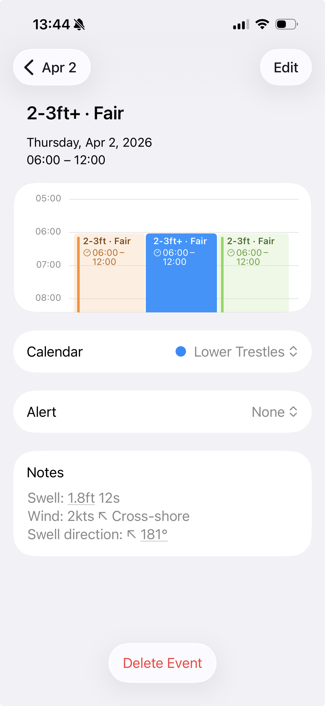
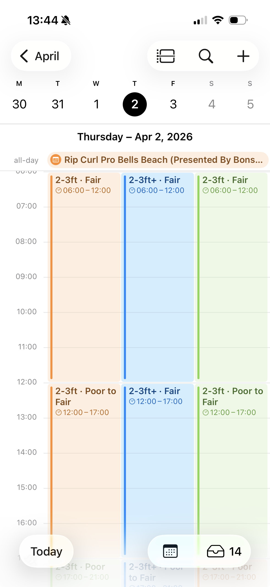

Surf Forecast Menubar App (MacOS)
WaveKit gives you quick access to surf conditions for your favorite spots. It shows wave heights, surf ratings, wind, and tides — all from your menu bar.
- Extended forecast with daily ratings
- Today's conditions with swell, wind, and tide data
- Sorts spots by distance from your location
- Add the forecast to your calendar app
- Click any spot to open it on Surfline
Installation
Download WaveKit (v1.1.5)
Requires macOS 14.0 (Sonoma) or later · Terms of Use
- Download and unzip WaveKit.zip
- Drag WaveKit.app to your Applications folder
- Open WaveKit from Applications
- If macOS shows a security warning, open System Settings → Privacy & Security, scroll down, and click Open Anyway
Features
Adding spots
Click the + button, then paste a Surfline URL.
Surfline URLs look like surfline.com/surf-report/...
View spots by distance or manually
Use the toggle to choose whether you want to view your saved spots in order of distance (closest first) or manually. You can set the order by going to Settings (⛭) and dragging the spots in your preferred order.
Forecast / Today views
Use the toggle to switch between Forecast and Today views.
- Forecast view shows a 16-day outlook. Scroll horizontally to see more days.
- Today view shows detailed conditions for today including swell, wind, and tides.
Sign in with your Surfline account in Settings (⛭) to unlock the full 16-day forecast.
Subscribe to conditions in your calendar app (experimental)
- In Settings (⛭), click the calendar icon next to the spot you want to add to your calendar.
- macOS will ask your permission to access Calendar.app
- A new calendar will appear with the conditions for that spot.
If you have iCloud syncing set up between your Mac and your iOS devices the calendar(s) will also appear on your other devices.
For now this feature is only supported on native calendar apps like Apple Calendar (macOS/iOS) and Notion Calendar. Google Calendar support is on the roadmap.


Changelog
v1.1.5 — May 2026
- Fixed drag-to-reorder for favorite spots in settings
- Downloads now served via GitHub Releases
v1.1.4 — May 2026
- Fixed account email display in settings
v1.1.3 — May 2026
- Settings UI polish: clearer account description, consistent button styles
- Version number now shown correctly in debug builds
v1.1.2 — May 2026
- Settings now live in the main popover — no separate window
- Forecast/Today toggle spans full width
- Adding a spot shows confirmation feedback, then clears the field
- Drag-to-reorder spots restored
- Fixed app icon (was blank in downloaded builds)
- Gatekeeper compatibility via ad-hoc code signing
v1.1.0 — March 2026
- Custom app icon and menu bar icon
- Per-spot calendar subscription via Apple Calendar / Notion Calendar (experimental)
- Manual drag-to-reorder and distance sort toggle for saved spots
- 2026 WSL Championship Tour calendar subscription
- Terms of Use
v1.0.0 — January 2026
Roadmap
- Broader calendar support (Google Calendar, ICS export)
- Notifications when a spot hits a target rating
- iCloud sync for saved spots across devices
- Mac App Store release